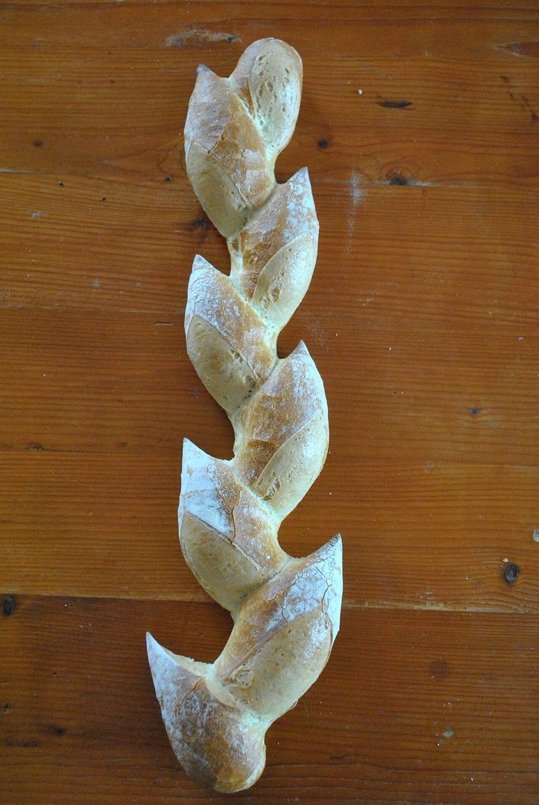
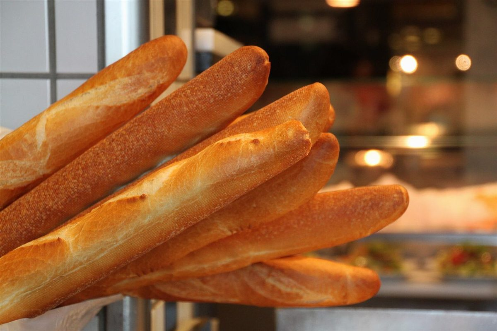
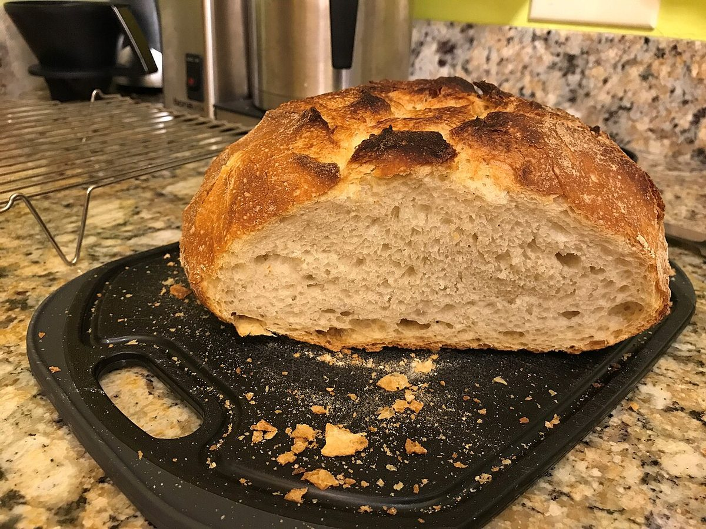

メニュー
メニュー
メニューと価格は準備中です。確認でき次第、こちらに掲載します。
棚のイメージ
下の写真は、パンのイメージとして並べたフリー素材です。お店で扱う商品・提供内容を示すものではありません。

穂の形のパンのイメージ 
細長いパンのイメージ 
網に並ぶ小さなパンのイメージ 
渦巻き模様のパンのイメージ 
切り分けたパンのイメージ 
格子の切れ目のパンのイメージ
お品書き
| パンの種類 | 準備中 |
|---|---|
| 価格 | 準備中 |
| ご予約 | 準備中 |
| 営業時間 | 準備中 |
詳しくはInstagram(@levainlupinlevain)をご覧ください。電話番号は 070-2825-6318 です。